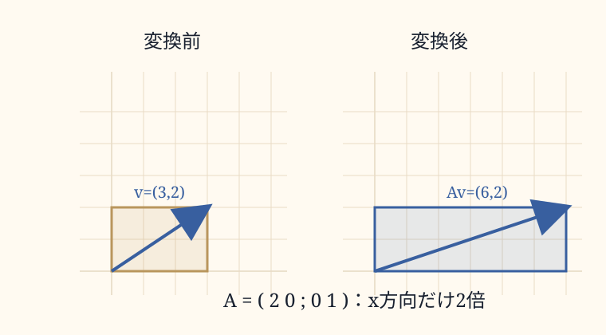

0. このノートの位置づけ
このページでは、行列をベクトルに掛ける計算と、その図形的な意味を整理する。行列は一つの点だけを動かすのではなく、空間全体の布を引き伸ばす操作として読む。
1. 横方向に2倍する行列
たとえば、
$$A=\begin{pmatrix}2&0\\0&1\end{pmatrix}$$
は、平面上のすべての点を横方向に2倍する操作として見ることができる。
$$\mathbf v\mapsto A\mathbf v$$
元のベクトルが「右に3、上に2」なら、行列を掛けた後は「右に6、上に2」になる。
$$\begin{pmatrix}2&0\\0&1\end{pmatrix}\begin{pmatrix}3\\2\end{pmatrix}=\begin{pmatrix}6\\2\end{pmatrix}$$

2. 行列とベクトルの掛け算
基本形は次の通りである。
$$\begin{pmatrix}a&b\\c&d\end{pmatrix}\begin{pmatrix}x\\y\end{pmatrix}=\begin{pmatrix}ax+by\\cx+dy\end{pmatrix}$$
行列の1行目とベクトルを組み合わせて上の成分を作り、2行目とベクトルを組み合わせて下の成分を作る。
3. 列で見る行列
行列は、基底ベクトルの行き先としても読める。
$$\begin{pmatrix}2&0\\0&1\end{pmatrix}=\left(\begin{matrix}2\\0\end{matrix}\ \begin{matrix}0\\1\end{matrix}\right)$$
1列目は右向き基本ベクトルの行き先、2列目は上向き基本ベクトルの行き先である。だからこの行列は、右向きのものさしだけを2倍にし、上向きのものさしはそのままにする。
4. 線形変換が守るもの
線形変換は、足し算と倍率を守る。
$$A(\mathbf u+\mathbf v)=A\mathbf u+A\mathbf v$$
$$A(c\mathbf v)=cA\mathbf v$$
先に足してから変換しても、それぞれ変換してから足しても結果が同じである。伸ばす・縮めるという関係も保たれる。
5. 線形変換、アフィン変換、非線形変換
| 種類 | 何をするか | 原点 | 例 |
| 線形変換 | 伸ばす・縮める・回す・傾ける | 動かない | (x, y) → (2x, y) |
| アフィン変換 | 線形変換＋平行移動 | 動くことがある | (x, y) → (x+3, y) |
| 非線形変換 | 場所ごとに変形が変わる | 場合による | (x, y) → (x^2, y) |
非線形な世界でも、ある一点のごく近くを見ると、そこだけは線形変換っぽく近似できる。この入口が微分である。